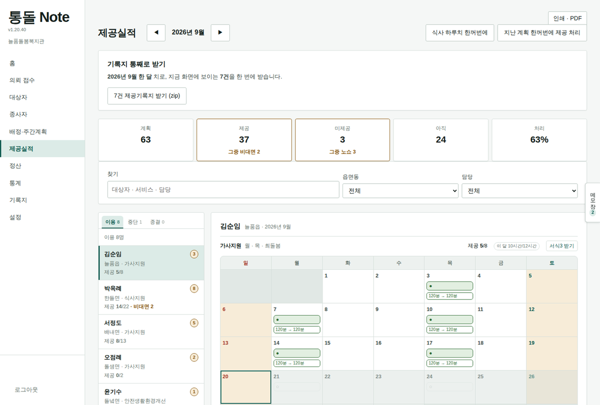
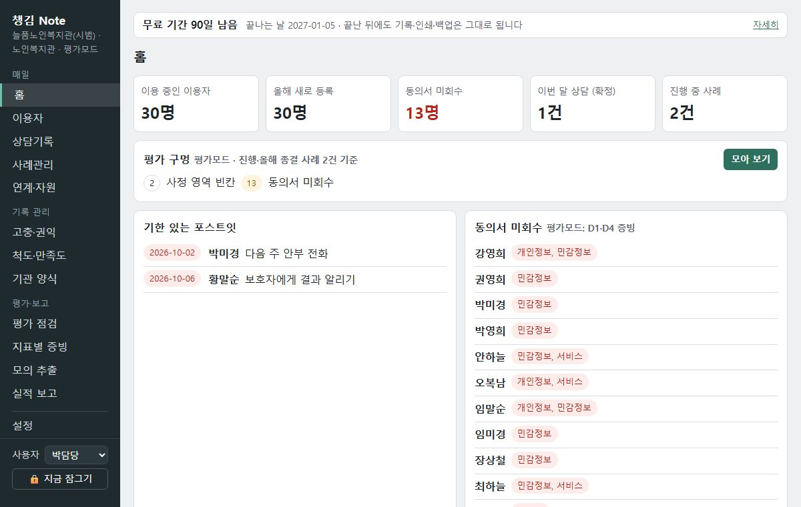

기관이 하는 일에 따라 두 가지 프로그램이 있습니다. 우리 기관에 맞는 쪽을 골라 주세요.
기록은 설치한 PC 안에만 저장합니다. 서버에 올리지 않습니다.
zip 하나를 받아 풀고, 두 번 눌러 켭니다. 설명서가 함께 있습니다.
통돌 Note 3개월 · 챙김 Note 90일, 모든 기능을 무료로 써 보실 수 있습니다.

대상자를 받고, 배정하고, 실적을 쌓고, 서류를 뽑는 일을 일하는 순서 그대로 잇습니다.

평소처럼 사례관리 기록을 쓰면, 평가지표 기준으로 채워야 할 곳을 모아 보여 줍니다.
지자체에서 통합돌봄 대상자를 의뢰받아 서비스를 제공하고 실적·청구 서류를 냅니다 → 통돌 Note
노인·사회·장애인복지관이나 지역자활센터에서 사례관리 기록을 쓰고 평가를 준비합니다 → 챙김 Note